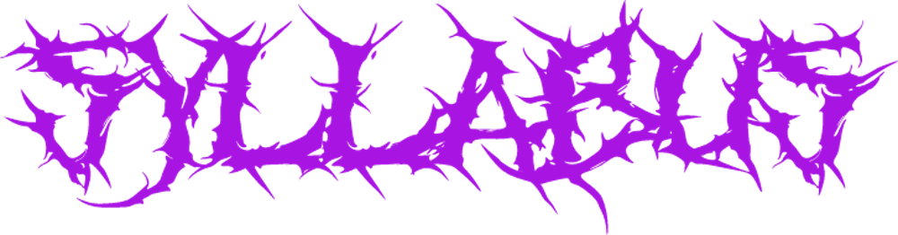

CSCI 200B Interim 2027
Special Topics: Introduction to Game Design
Morning Sessions: 10:40-12:40 in RNS 203
Afternoon Sessions: 1-3 in RNS 203
General Information
Mission: This is a welcoming, inclusive, encouraging, and failure-tolerant class.
Instructor: Kim Mandery
E-mail: mander1@stolaf.edu
Office: RMS 407
Textbook: Game Design Workshop 5e by Tracy Fullerton. Selected excerpts are available on Moodle or the library . ## Course Description Video games have become one of the largest entertainment industries in the world, and the software behind them draws on nearly every area of computer science at once. Modern real-time games have been used not only for entertainment but also in education, simulation, training, and scientific visualization. In this course, we’ll explore how modern 2-D and 3-D interactive games are built, learning the concepts and tools behind them and applying them to develop real, playable games. We’ll cover core areas including graphics, parallel processing, human-computer interaction, networking, artificial intelligence, and software engineering, and see how they come together in a single interactive system. We will also explore real-world applications of game technology and discuss the social and ethical context in which games are developed, marketed, and played.
Course Goals
Upon successful completion of this course, students will be able to:
- explain the social and ethical context in which software and video games are developed, marketed, and used;
- describe the technologies and platforms upon which modern interactive software and video games are built;
- apply software engineering concepts necessary to develop video games within a development team;
- analyze the computational theory used in game design and related fields of computer science (artificial intelligence, computer graphics, networks, etc.);
- apply game theory to multi-player games, decision-making, and artificial intelligence.
Course Schedule
The schedule for this course is available by navigating to Course Information > Schedule on the navigation window to the left. This page is likely to be updated throughout the semester, so keep an eye out on deadlines.
Active Learning and Engagement
I expect you to take an active role in class each day, participating positively, wholeheartedly, and respectfully in class/group discussions and other activities. You may need sick/mental health days. You are responsible for learning the material on the day you missed. If you are experiencing issues causing you to miss classes often, please speak with me as this may be evident of a possible failing grade. You can also visit your class dean as they are a great resource.
Course Breakdown
Readings
(tbd points): Each topic has resources related to the content covered in class, consisting of textbook passages from Game Design Workshop (GDW), articles, and/or videos. Come to each class having worked through the assigned material. Late work: no late work will be accepted.
Critical Analyses
Lab Assignments
We will be learning a game engine over the course of this class. Labs will consist of tutorials for the selected game engine. Late work: no late work will be accepted.
Semester Project
Over the entirty of this course, you will complete a group project where you apply the concepts covered in the course. You can find more in-depth information regarding the project on the project page Late Work: No late work will be accepted.
Standards-Based Exams
(tbd points): You will take two exams, each graded using standards-based grading. Rather than earning a single overall score, you are assessed on how well you demonstrate mastery of individual standards.
Each exam assesses a selection of standards drawn from the Game Design Core Standards listed on this page. A study guide provided before each exam will tell you exactly which standards it covers, so you know what to prepare.
How standards are graded
Each standard is scored on an 8-point scale, binned into four levels:
| Level | Meaning | Points |
|---|---|---|
| P | Proficient | 8 |
| S | Satisfactory | 6 |
| N | Not satisfactory | 4 |
| I | Incomplete | 0 |
Your exam grade is the combination of your scores across all assessed standards.
Revising a standard
After you receive your exam back, you may revise any standard you wish to improve. Each successful revision bumps that standard up one level: an I becomes an N, an N becomes an S, and an S becomes a P.
To revise a standard, submit a response that addresses all three of the following:
- What went wrong: identify the errors you made.
- How to fix it: provide the corrected work and the correct reasoning.
- Reflection: reflect on the question and what you learned from the mistake.
Extra Credit
Some projects have additional questions you can answer for extra credit.
Final Exam
The final exam is during the assigned period:
Friday, Jan 29 from 10:40 - 3:00 P.M.
Final Grade Scale
97 ≤ A+ ≤ 100 87 ≤ B+ ≤ 90 77 ≤ C+ ≤ 80 67 ≤ D+ ≤ 70
93 ≤ A ≤ 97 83 ≤ B ≤ 87 73 ≤ C ≤ 77 63 ≤ D ≤ 67
90 ≤ A- ≤ 93 80 ≤ B- ≤ 83 70 ≤ C- ≤ 73 60 ≤ D- ≤ 63
Explanations of each letter grade range can be found at https://catalog.stolaf.edu/academic-regulations-procedures/grades/
Syllabus Changes: All course information provided in this syllabus is subject to change and/or elimination. Changes will only be made when the instructor feels they are in the best interest of the class. It is the responsibility of every student to attend class, check e-mail, and communicate with the instructor to be informed and understand these changes.
Most importantly HAVE FUN – I am really looking forward to this semester!
Game Design Core Standards
Games as a Medium HIST
- define what constitutes a game and distinguish games from other interactive software
- classify games by genre, formal elements, and business/distribution model
- articulate the social and ethical context in which games are developed and played
Game Design Elements ELMT
- identify and apply formal elements (rules, procedures, resources, conflict, objectives)
- analyze how mechanics, dynamics, and aesthetics (MDA) interrelate in an existing game
- author a design document that specifies a game’s elements and intended experience
Game Engines and Frameworks ENG
- navigate a modern engine’s editor, scene graph, and asset pipeline
- implement game behavior using the engine’s scripting language and event/signal system
- structure a project for maintainability and version control in a team
Game Physics and Collision Detection PHYS
- implement movement using kinematic bodies and tunable physics parameters
- distinguish game feel from physical simulation and tune for the former
- design collision detection using hitboxes, hurtboxes, layers, and masks
Game Mechanics MECH
- translate a rule set into working, enforceable code
- design core, session, and meta loops with appropriate feedback
- evaluate a mechanic against the player experience it is meant to produce
Level Design LVL
- design levels that teach mechanics through pacing, landmarks, and sightlines
- construct playable levels using tilemaps and greyboxing
- analyze difficulty curves and rhythm across a level or sequence of levels
Character Design CHAR
- design characters and sprites for readability, silhouette, and animation
- use animation and visual design to communicate state and behavior
- align character design with the game’s mechanics and intended aesthetic
Prototyping PROT
- build a physical or digital prototype to answer a specific design question
- scope a prototype to test one mechanic or hypothesis at a time
- iterate on a prototype based on observed playtest results
AI and Pathfinding AI
- implement readable enemy behavior using finite state machines
- apply pathfinding to navigate agents through a game environment
- evaluate AI behavior for readability, challenge, and fairness
Graphics and Lighting GPH
- distinguish graphics from aesthetics and their roles in communication
- apply lighting and visual effects to convey information and mood
- optimize visual assets for performance and readability
Statistics, Probability, and Game Theory THEO
- apply probability and distributions to model randomness and outcomes
- analyze multi-player interactions using game-theoretic reasoning
- use statistical measures to characterize and predict game behavior
Game Balancing BAL
- identify dominant strategies and sources of imbalance in a game
- tune parameters and difficulty curves to achieve intended balance
- design difficulty modes and accessibility options for varied players
Policies and Resources
The mission of this course is to make everyone feel welcome, not only in our classroom, but also in the field of computer science. If there is any reason you do not feel welcome in this class, please talk to me. If anything is said to you that makes you feel uncomfortable, please talk to me. If there is any life event that is interfering with your learning in this class, please talk to me. I may not be able to solve all your problems, but I can direct you to the right resources on campus.
Inclusivity and Community
In keeping with St. Olaf College’s mission statement, this class strives to be an inclusive and antiracist learning community, respecting and promoting those of differing backgrounds and beliefs. As a community, we will be to be respectful to all citizens in this class, regardless of race, ethnicity, religion, gender, or sexual orientation. This course affirms people of all gender expressions and gender identities. If you prefer to be called a different name or pronoun than what is on the class roster, please let me know.
Illness and Community Standards
Out of respect for our learning community, if you are experiencing any symptoms of an illness, do not come to class or my office. Please contact me before class time to let me know of your absence.
Cell Phone Policy and Classroom Atmosphere
You are expected to contribute to a positive classroom atmosphere, which includes arriving on time, not being disruptive, being respectful, actively involving yourself in class, and silencing and putting away cell phones. There may come a time where we use technology in class – during this time you can use a laptop, tablet, or your phone if you do not have the other options available to you. At any other times, however, I do not want to see your phone out. I’ll ask you to put them away if they show up.
Mental and Physical Health
I greatly value your experience in this class, and it is my duty to facilitate a safe, caring, and productive learning environment. I recognize that you may experience a range of emotional, physical, and/or psychological issues, both in and out of the classroom, that may distract you from your learning. If you are experiencing such issues, please do not hesitate to see me– I am here to listen. We can also discuss what further resources might be available to you.
Academic Accommodations
I am committed to supporting the learning of all students in my class. If you have already registered with Disability and Access (DAC) and have your letter of accommodations, please meet with me as soon as possible to discuss, plan, and implement your accommodations in the course. If you have or think you have a disability (learning, sensory, physical, chronic health, mental health or attentional), please contact Disability and Access staff at 507-786-3288 or by visiting https://wp.stolaf.edu/academic-support/dac.
Multilingual Students
I am committed to making course content accessible to all students. If English is not your first language and this causes you concern about the course, please speak with me. Students who would like extra support with writing or speaking in English can also contact the language specialist in CAAS.
Managing stress, anxiety, and other issues
I greatly value your experience in this class, and it is my duty to facilitate a safe, caring, and productive learning environment. I recognize that you may experience a range of emotional, physical, and/or psychological issues, both in and out of the classroom, that may distract you from your learning. If you are experiencing such issues, please do not hesitate to come see me – I am here to listen. We can also discuss what further resources might be available to you.
Plagiarism & Academic Integrity
Plagiarism, the unacknowledged appropriation of another person’s words or ideas, is a serious academic offense. It is imperative that you hand in work that is your own, and that cites or gives credit to others whenever you draw from their work. This includes citing prompts when using genAI tools or an internet search. Please see St.Olaf’s statements on academic integrity and plagiarism at: https://wp.stolaf.edu/thebook/academic/integrity/. See also the description of St.Olaf’s honor system at: https://wp.stolaf.edu/honorcouncil/.
Communication Expectations:
- Instructor/Student Expectations: I check my email frequently, and attempt to respond to questions within 24 hours. It should not be expected that I check my email after 9 PM, on Saturdays, or regularly during breaks.
- E-mail Etiquette: If you have multiple questions, fewer emails with more information per email is preferred. Please include the following when sending an email: course number with section number, a description of your question(s) within the subject line, a greeting and your instructors preferred name (mine is Kim), and a sign-off using your preferred name (this is what you want others to refer to you in class by). Add screenshots of your work for clarity.
The St. Olaf Honor System
The St. Olaf Honor System has been in place at St. Olaf College since 1911. All tests, quizzes, and examinations of any kind are taken under the St. Olaf Honor System. Each student is responsible for adhering to all principles of the Honor System regardless of the individual circumstances associated with their assessment environment.
Computer Science Program Attendance Policy Jterm 2026:
Attending class is essential for learning the content of the course, as well as practicing communication and collaboration. Missing class hinders your ability to achieve these important learning outcomes. That said, you understandably may need to occasionally miss class due to illness or a scheduling conflict. In these situations, I do not want to judge which absences should count as “excused” or “unexcused.” So, all absences will be treated equally, since they all result in missing important class time. Additionally, arriving late disrupts not only your own learning but also your classmates’ ability to engage fully in class activities. Any tardiness over 5 minutes (subject to instructor adjustment) will also be counted as an absence. During Jterm, each session (morning and afternoon) will have attendance taken, so missing an entire day of class equates to two absences.
To reflect the importance of attendance in this course: (1) If you have accrued two absences without contacting me in advance, I’ll notify your academic advisor and the Dean’s Office by filing an Early Alert Form to make sure you’re getting the support you need. (2) If you have accrued four absences (whether or not you contacted me in advance), you must meet with me to discuss your standing in the course and what you need to do to get back on track for successfully completing the class. (3) If you have accrued nine absences (whether or not you contacted me in advance), you’ll automatically fail the class. Nine absences means missing nearly a quarter of all class sessions, indicating that you have not legitimately completed a student-centered course that requires class engagement. If you do need to miss class, I strongly encourage you to check in with another student on what you missed, and attend office hours to discuss any questions that you have.